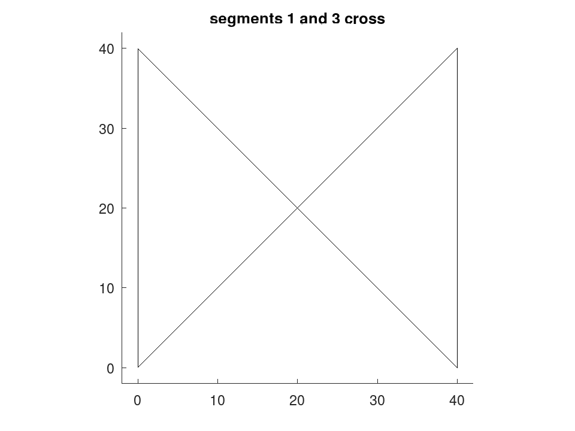

geom.selfintersects
drafting: TF = geom.selfintersects (P)
drafting: TF = geom.selfintersects (P, CLOSED)
drafting: [TF, IDX] = geom.selfintersects (…)
Test whether a sampled curve crosses itself.
TF = geom.selfintersects (P) returns true when any two
non-adjacent segments of the curve P intersect, and false otherwise.
P is an N-by-2 matrix of points.
TF = geom.selfintersects (P, CLOSED) treats the
curve as closed when CLOSED is true, adding the segment from the last
point back to the first. CLOSED defaults to false.
[TF, IDX] = geom.selfintersects (…) additionally
returns the offending segment pairs as an M-by-2 matrix of segment
indices, one row per crossing pair, empty when there is none. Segment
k runs from point k to point k+1.
Segments that merely share an end point are not crossings, so consecutive
segments are never reported, nor are the first and last segments of a closed
curve. A curve that touches itself without crossing, where two segments
meet at a point that is an end of both, is reported, since for the purposes
this test serves, touching and crossing are equally fatal. Touching means
meeting: segments any distance apart, however small, do not touch, where a
geom.Region counts curves within 1e-7 mm of one another as touching.
This is the global companion to the local criterion in
geom.curveoffset. An offset curve can satisfy the curvature condition
at every point and still pinch closed somewhere along its length; only a
test like this one sees that.
The test is exhaustive over segment pairs, so its cost grows as the square of the number of points. On a profile of a few thousand points that is a fraction of a second, but it is not something to call inside a loop over candidate designs.
See also: geom.curveoffset, geom.curvature, geom.signedarea
Source Code: geom.selfintersects
The global companion to the local fold test in geom.curveoffset. A curve can satisfy the curvature condition everywhere and still pinch closed somewhere along its length; only a crossing test sees that.
bowtie = [0, 0; 40, 40; 40, 0; 0, 40]; [TF, IDX] = geom.selfintersects (bowtie, true)
TF = 1 IDX = 1 3
D = draw.Drawing ().polyline (geom.Polyline (bowtie, 'Closed', true));
plot (D);
title ('segments 1 and 3 cross');

A simple outline crosses nothing, and reports so.
t = linspace (0, 2*pi, 181)(1:180)'; P = (30 + 4 * cos (5 * t)) .* [cos(t), sin(t)]; geom.selfintersects (P, true)
ans = 0